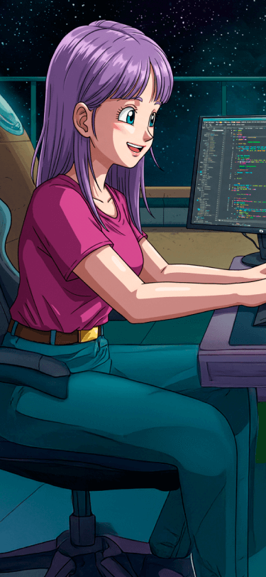
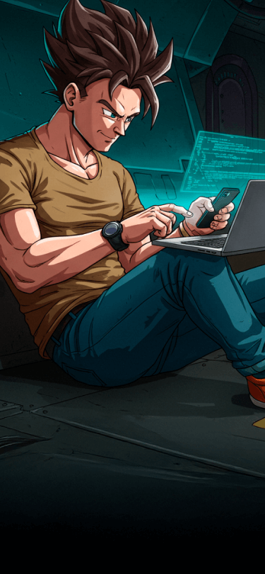

Cyberstorm
No coração da revolução digital, surge Cyberstorm (Kael Takeda), um herói forjado entre circuitos e códigos. Um gênio da computação e mestre da cibersegurança, ele combina inteligência artificial e tecnologia de ponta para proteger o mundo contra ameaças digitais e físicas. Com seu traje infundido com nanotecnologia, ele pode se conectar a qualquer rede, hackear sistemas em segundos e até manipular campos eletromagnéticos para desativar armamentos inimigos. Mas por trás das linhas de código e da máscara futurista, Cyberstorm é movido por um desejo inabalável de justiça, garantindo que a liberdade digital permaneça nas mãos das pessoas e não nas garras de corporações corruptas ou cibercriminosos.

Codepixie
Entre linhas de código e magia digital, CodePixie emerge como uma heroína única, capaz de transformar algoritmos em feitiços e dados em energia pura. Dotada de um intelecto brilhante e um toque sobrenatural, ela manipula a realidade virtual e física com comandos codificados, criando firewalls impenetráveis, invocando drones de luz e até reescrevendo trechos da própria existência digital dos inimigos. Seu traje reluzente é uma fusão de tecnologia avançada e encantamentos criptografados, permitindo que ela se mova entre redes e dimensões como se fosse um feitiço vivo. Mas por trás de sua aura mística, CodePixie tem um único objetivo: proteger o equilíbrio entre a humanidade e a era digital, garantindo que a magia do conhecimento continue sendo uma força para o bem.

Codebreaker
Codebreaker é um herói misterioso e brilhante, capaz de decifrar qualquer código, quebrar qualquer cifra e desvendar os mais intrincados mistérios digitais. Com uma mente afiada como um supercomputador e reflexos rápidos como o próprio fluxo de dados, ele luta contra organizações criminosas que usam a tecnologia para o mal. Sempre um passo à frente dos hackers mais habilidosos, Codebreaker combina inteligência, estratégia e um profundo senso de justiça para proteger informações sigilosas e garantir a segurança do mundo digital.

Neonpulse
Neonpulse é uma heroína eletrizante, tão ágil quanto a própria luz que ela manipula. Programadora brilhante e especialista em cibersegurança, ela combate o crime digital com a mesma maestria com que dança entre os códigos e sistemas. Esposa de Hexblade, ela é seu equilíbrio, trazendo um senso de justiça mais claro para a escuridão em que ele opera. Juntos, eles formam uma dupla imbatível: ele, a lâmina nas sombras; ela, o pulso luminoso que ilumina o caminho. Enquanto Hexblade quebra as correntes do sistema, Neonpulse protege aqueles que precisam de um escudo contra o caos digital.

Hexblade
Hexblade é um anti-herói enigmático, um programador genial que domina tanto o mundo do código quanto o da escuridão. Mestre em hacking e na arte do combate, ele forja sua própria justiça em um sistema corrompido, usando algoritmos e lâminas digitais para desmantelar corporações opressoras e governos autoritários. Sua moral é ambígua: ora um justiceiro, ora um mercenário, ele caminha na linha tênue entre herói e vilão, sempre guiado por seu próprio código – de ética e de programação.